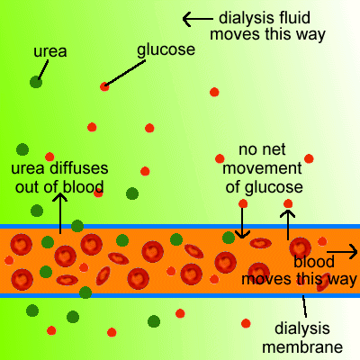

These notes were created by TheRealNanoz
Biology Topic 5
homeostasis
this is an organisms ability to regulate / control it's internal conditions so that crucial reactions can occur at an optimal rate
This includes:
blood glucose concentration, internal temperature, water levels
The Nervous System
The central nervous system (CNS) is made of the brain and the spinar Chord
The peripheral nervous system (PNS) is made of all the other nerves.
Most actions take the route of:
stimulus -> receptor -> sensory neurone -> relay neurone -> CNS (brain or spine) -> motor neurone -> effector
The eye
the eye is fundementally made up of a lens, ciliary muscles, and suspensory ligaments.
When looking at something close:
the lens needs to become thicker (light refract more), to do this the ciliary muscles will contract while suspensory ligaments relax.
When looking at something far:
the lens needs to become thinner (light refract less), to do this the ciliary muscles relax and the suspensory ligaments tighten.
myopia (short sighted) the light converges before retina - need to refract lessDNA
Dna is a double stranded double helix
The Polymer is made of a phosphate, sugar and base. A - T, C - G
Eukaryotic: chromosomes, nucleus
Genes code for a sequence of DNA (specific amino acid)
Genome is all of the DNA for an organism
There are non coding sections which dont code for a protein but can control gene expression (whether it is used or not)
Protein synthesis
Proteins are made at ribosomes
1. transcription:
- in the nucleus, the dna is split open
- a completely different mRNA strand is made using enzymes
- mRNA leaves the nucleus to go to ribosome
2. Translation:
- ribosome binds to mRNA
- 'reads' 3 nucleotides at a time
- tRNA brings the correct amino acid for the triplet nucleotides to the ribosome
- ribosome binds the amino acids together to create polypeptide
- folds into correct shape
DNA Mutation
Deletions
Insertions
substitute
Reproduction
Sexual Reproduction:
fertilisation
restores diploid number
give genetic variation
less offspring
slower
more energy required
Kidneys:
Kidneys make urine
Filtration
blood taken to kidneys via renal artery
blood stays in capillary
substances dissolved in plasma are filtered into the urine
selective reabsorbtion is where useful products taken back to the blood such as glucose and amino acids
when ions are needed, ions will be selectively reabsorbed aswell by the kidneys to ensure water levels
anti diuretic hormone (ADH):
made in the pituitary gland
makes the kidney tubiles less permeable to water
therefore less water is reabsorbed from filtrate
therefore urine becomes more dilute
less ADH causes the opposite to occur
Dialysis:
glucose has no diffusion gradient - stays in blood
urea move from the blood down conc gradient into dialysis fluid
excess water from blood moves into dialysis
opposite directions maintains urea conc gradient
